IMPRESS
Improving scientific advice to fishery management for resources of interest for Spain in Atlantic waters (IMPRESS) is a Spanish National Project. The underlying hypothesis of the project is that facing up with the identified stock assessment issues of the Spanish North West Atlantic species could substantially improve their fisheries management.
Within this context, the goal of IMPRESS is to improve the scientific advice quality for fisheries management of resources of interest for Spanish fleets in the North West Atlantic.
To achieve this goal the IMPRESS project will apply a sequential analysis following step by step the assessment process from the stock identification of the available data to the simulation and evaluation of management strategies
Members
The research team is build by biologists and marine scientists. The two IPs are biologist with broad experience in mathematical and statistical models and assessment methods. This experience will be complemented with the external collaborators supporting the modelling work. However, due to the high mathematical and statistical level required from several tasks of the project a doctor in statistics has been hired.

M. R. Domínguez Petit
rosario.dominguez@ieo.es
I. González Herraiz
Isabel.herraiz@ieo.es


C. Rodríguez-Cabello
cristina.cabello@ieo.es


J. Gil Herrera
juan.gil@ieo.es

A. Silva
asilva@ipma.pt
M. I. Riveiro
isabel.riveiro@ieo.esStudents
Furthermore than the team members several students from master's internships and PhD programs are also collaborating with IMPRESS aims.

News
-
The International Statistical Ecology Conference(01/07/2022)
Impress members have been participated in the The International Statistical Ecology Conference in Cape Town. Marta Cousido talks about new ideas to deal with bias sampling in ogive estimation. Francisco Izquierdo discussed about: Is it worth to increase the complexity of stock assessment models for species with sex dimorphism? Go to the video.
Go to the poster. -
Working Group on Cephalopod Fisheries and Life History (14/06/2022)
Eva Velasco and Xulio Valeiras has been participated on the WGCEPH improving knowledge about and the assessment of cephalopods as an exploited resource. More details.
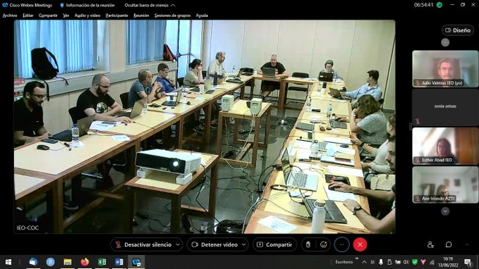 -
XVIII Edición de la Conferencia Española de Biometría (30/05/2022)
Alba Fuster has been presented her research "Assessment of uncertainty in biomass estimation using different statistical tools employed in fisheries management" winning the best poster award at the XVIII Edición de la Conferencia Española de Biometría. More details.

-
Project Meeting Impress(24/05/2022)
Explaining advances of the aims proposed in the project and establishing future studies/activities to conclude the poject in the next months.

-
New article "Bayesian spatio-temporal CPUE standardization: Case study of European sardine (Sardina pilchardus) along the western coast of Portugal" (20/05/2022)
Impress members have published an article focus on the standardization of the data of sardine fishery-dependent catch-per-unit- effort (CPUE) from the west coast of Portugal using Bayesian hierarchical spatio-temporal models (BHSTM) with the integrated nested Laplace approximation (INLA). More details.
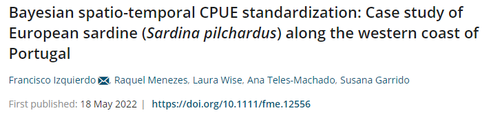 -
Working Group for the Bay of Biscay and the Iberian Waters Ecoregion(01/05/2022)
Impress members have participated on the WGBIE which carries out stock assessments and catch forecasts on Northeast Atlantic shelf fish stocks and provide a first draft of the ICES advice for all the stocks. More details.

-
New article "This is what we know: Assessing the stock status of the data-poor common sole on the Iberian coast" (19/02/2022)
Impress members have published an article analyzing the status of sole in ICES 8c9a areas using 3 size-based methods: length-based indicators, length-based spawning potential ratio and mean length-based mortality. More details.
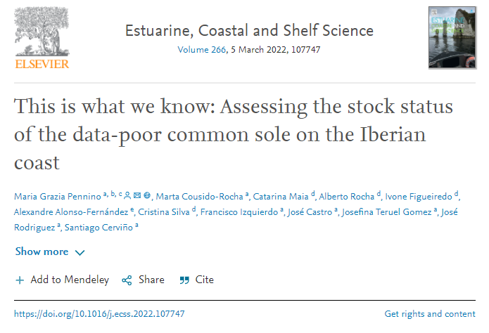 -
Benchmark workshop on anglerfish and hake-WKANGHAKE 2022 (18/02/2022)
Impress members have participated on the Benchmark workshop on anglerfish and hake (WKANGHAKE 2022) proposing a sex-separated Stock Synthesis (SS) model for the assessment of southern hake (ICES divisions 8.c and 9.a). More details.

-
New article "Studying the sensitivity of data-poor stock assessment methods" (21/01/2022)
Impress members have published an article studying the sensitivity of data-poor stock assessment methods to uncertainty about biological information. More details.
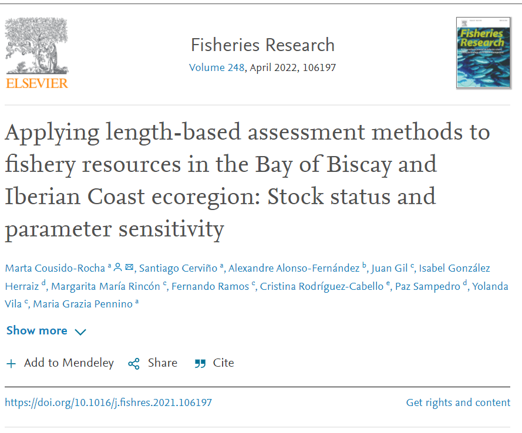 -
New article "Identifying persistent biomass areas" (17/01/2021)
Common sole is a highly valued species in the market, in this new article, pusblished by Impress members, it's analized which are the areas where this species is most abundant and its temporal persistence. More details.

-
Coming workshop on "Ecological Models" (17/12/2021)
EuroMarine funded a workshop entitled "ADVANCES IN FISHERIES SCIENCE: USING ECOLOGICAL MODELS TO INFORM CURRENT FISHERIES ADVICE". The WORKSHOP will take place on March, 2022 on AZTI Tecnalia (Bizkaia, Spain). More details.

-
Iberian Symposium on Modeling and Assessment of Fishery Resources (19-22/10/2021)
The Iberian Symposium on Modeling and Assessment of Fishery Resources organized by Mervex group has taken place this week. Details can be found on its website. Website.
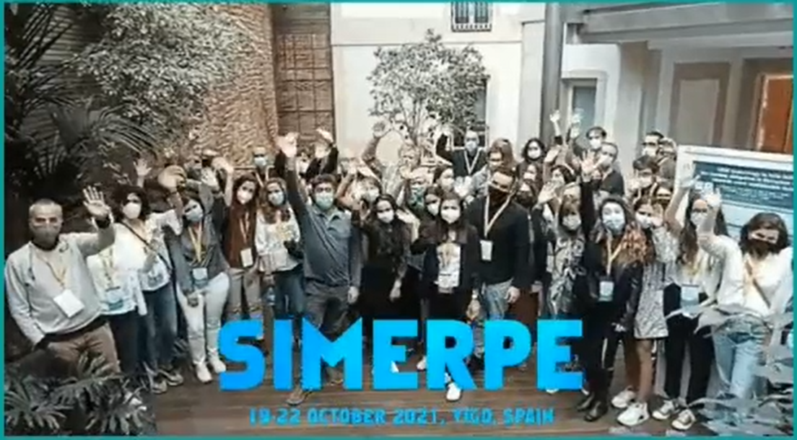 -
VIII Xornada de Usuarios de en Galicia (14/10/2021)
Alba Fuster talked about R-INLA and regression models for standardizing spatio-temporal CPUE indices on the VIII Xornada de Usuarios de en Galicia.

-
V Simposio Iberoamericano de Ecología Reproductiva, Reclutamiento y Pesquerías (13/10/2021)
Davinia Lojo presented her research on the life history of hake in Iberian Atlantic waters on the V Simposio Iberoamericano de Ecología Reproductiva, Reclutamiento y Pesquerías.

-
Iberoamerican Environmental Week (20/09/2021)
Rosario Domínguez participated in a panel discussion on Marine Research and Blue Growth at the Ibero-American Environmental Week.
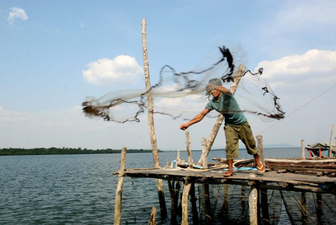 -
ICES Annual Science Conference (06/09/2021)
Marta Cousido-Rocha presented "Assessing the sensitivity of data-limited methods for resources in the Atlantic waters"at the ICES Annual Science Conference 2021. You can watch the presentation in the following link. Link.
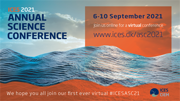 -
DESCARSEL survey (31/08/2021)
Impress members study improvements in the selectivity of trawling during 12 days, aboard the vessel Miguel Oliver. They test different innovations to allow the escape of juveniles or avoid the capture of dolphins.

- Bayesian and spatial statistics in fisheries science (05/07/2021)
-
ASLO 2021 Aquatic Sciences Meeting (24/06/2021)
Francisco Izquierdo presented at the ASLO 2021 AQUATIC SCIENCES MEETING the first results of this interesting work: Estimating life history parameters of European hake using Bayesian models. Marta Cousido Rocha presented our recent work "Applying length-based assessment methods to fisheries resources". Check the following link for details.
Link.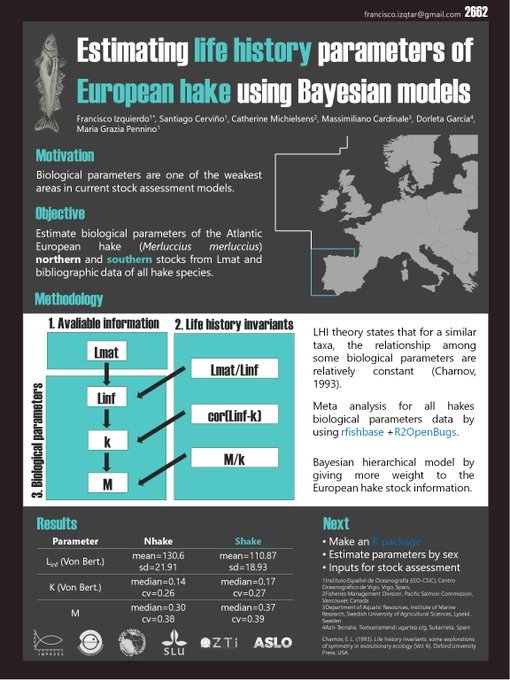 - Workshop Biostatnet Software (15/06/2021)
-
Interview on Burela Radio 107.7 FM (09/06/2021)
Xulio Valerias and Eva Velasco has been talking about biodiversity, climate change, fisheries and Citizen Collaboration on Burela Radio 107.7 FM.
Listen to it!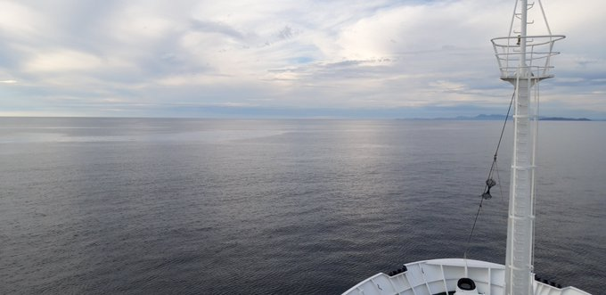 -
XVII International Symposium on Oceanography of the Bay of Biscay (02/06/2021)
Members of IMPRESS project are participating in the XVII International Symposium on Oceanography of the Bay of Biscay (ISOBAY 17) presenting several studies: "This is what we know: assessing the stock status of the data-poor common sole in the Bay of Biscay and Iberian Coast ecoregion", "Testing Surplus production models sensitivity: a case study for ASPIC and SPiCT", "Study of the life traits of demersal fish in Atlantic Iberian waters" and "Applying length-based assessment methods to fishery resources of the Bay of Biscay and Iberian Coast ecoregion: stock status and parameter sensitivity".
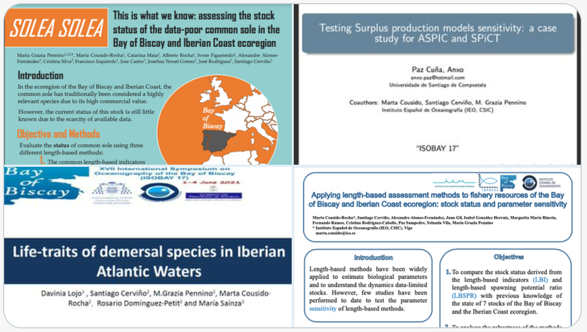 -
Working Group on Southern Horse Mackerel, Anchovy, and Sardine (WGHANSA) (26/05/2021)
This week the WGHANSA working group (ICES Working Group on Southern Horse Mackerel, Anchovy, and Sardine) meets. It evaluates populations of horse mackerel from the south (from Fisterra to the south), Iberian sardines and anchovy division 9a. Our colleagues Isabel Riveiro, Gersom Costas, Margarita Rincón and Fernando Ramos have participated.

-
Working Group for the Bay of Biscay and the Iberian Waters Ecoregion (WGBIE) (12/05/2021)
We are evaluating 23 stocks (anglerfishes, megrims, hake, nephrops, pollack and sole stocks) in the Bay of Biscay and the Iberian Waters Ecoregion in the WGBIE.

-
Managing the Iberian sardine (07/05/2021)
The last week our Impress members re-examine the Iberian sardine new Havest Control Rule (HCR) proposed by Portugal and Spain.

-
Working Group on Biology and Assessment of Deep-sea fisheries resources (WGDEEP) (30/04/2021)
Our s member Juan Gil Herrera participated to the ICES Working Group on Biology and Assessment of Deep-sea fisheries resources (WGDEEP) this week! Always trying to improve stock Assessment results for the deep-sea fisheries resources.
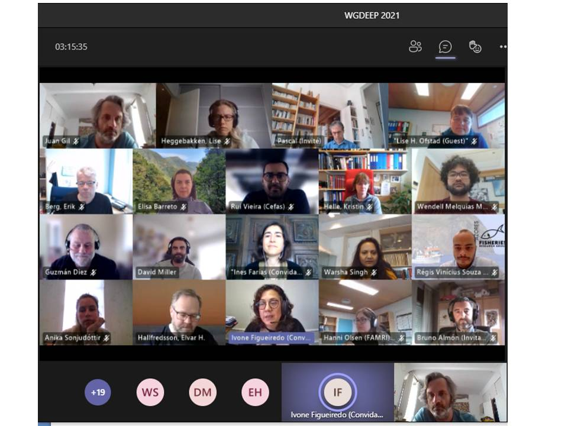 -
Iberian Symposium on Modeling and Assessment of Fishery Resources (SIMERPE) (01/04/2021)
Impress Project is organizing the Iberian Symposium on Modeling and Assessment of Fishery Resources (SIMERPE) to be held in Vigo on October 19-22! Go to the website.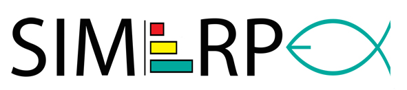 -
Interview of our member Francisco Izquierdo en "Vivir o Mar" (01/03/2021)
Our student (Francisco Izquierdo) explained his recent research entitled "Spatio-Temporal Assessment of the European Hake (Merluccius merluccius) Recruits in the Northern Iberian Peninsula" on the TV program "Vivir o mar". Go to the video.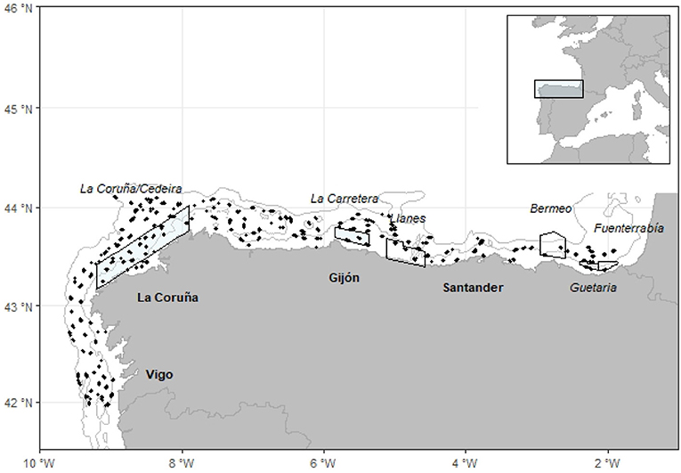 -
Workshop on the Inclusion of Discard and Survival in Stock Assessments (09/02/2021)
Our members are attending to the Workshop on the Inclusion of Discard and Survival in Stock Assessments (WKSURVIVE). The aim is to achieve new methods with a collaboration between experts in stock assessment and experts in assessing discard survival landing obligation.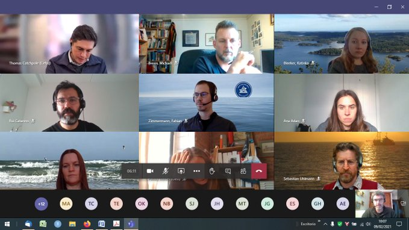 -
V Scientific Conference of Students of the SEB (28/01/2021)
Our students, D. Lojo Amoedo and A. Paz Cuña are participated in the V Scientific Conference of Students of the SEB. More details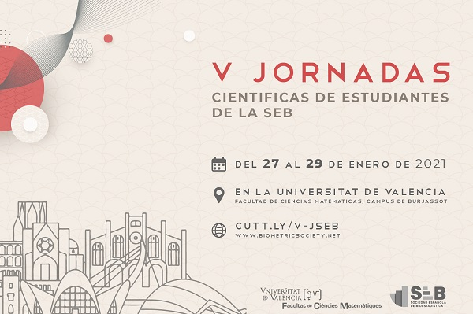 -
Working Group on Cephalopod Fisheries and Life History (23/01/2021)
This week we are attending to the Working Group on Cephalopod Fisheries and Life History (WGCEPH) planning the 2021 activities.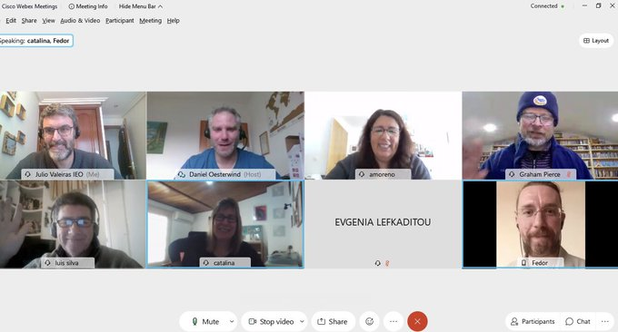 -
Workshop on Tools and Development of Stock Assessment Models Using a4a and Stock Synthesis (19/01/2021)
This week we are attending the Workshop on Tools and Development of Stock Assessment Models Using a4a and Stock Synthesis (WKTADSA) trying to improve Stock Assessment Models for Iberian Atlantic stocks.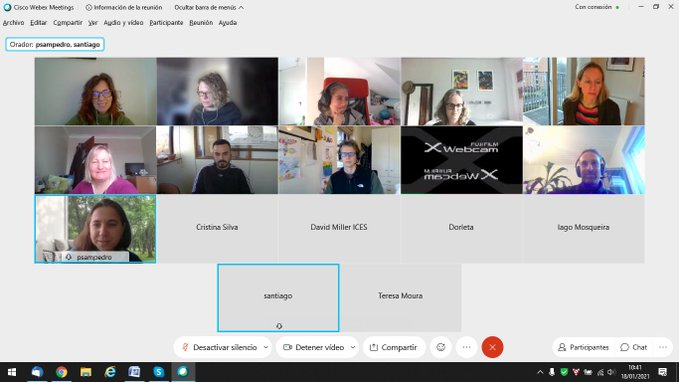 -
ICES
TAF Reporting Workshop WKREPTAF (14/01/2021)
We are attending to ICES TAF Reporting Workshop (WKREPTAF), recognising the importance of reproducible and transparency research in Stock Assessment.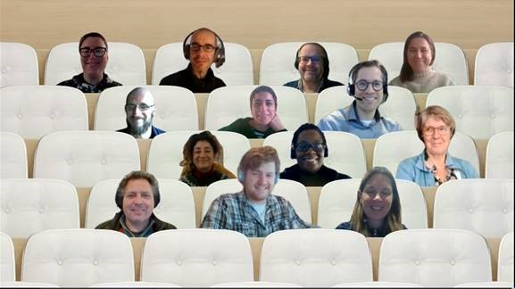 -
Last weekly meeting of 2020 (18/12/2020)
Some impress members say goodbye to 2020 by reviewing their progress in the last months of the year, at their weekly meeting, and setting new goals for the new year.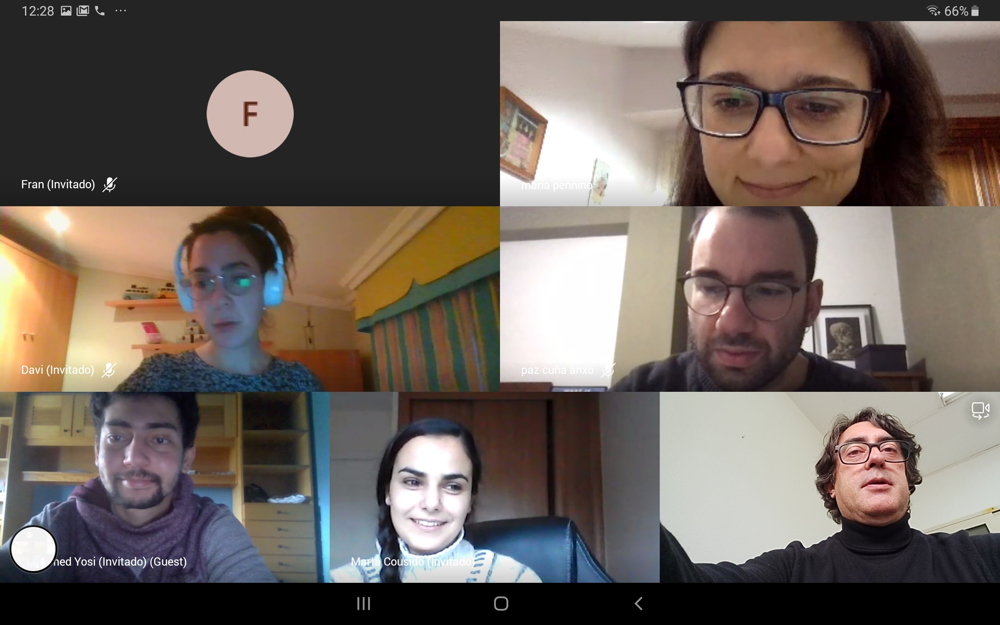 -
The World Conference on Marine Biodiversity (11/12/2020)
Impress members have been participated to the World Conference on Marine Biodiversity sharing different studies that we are carrying on the many Working Packages of Impress Project.
 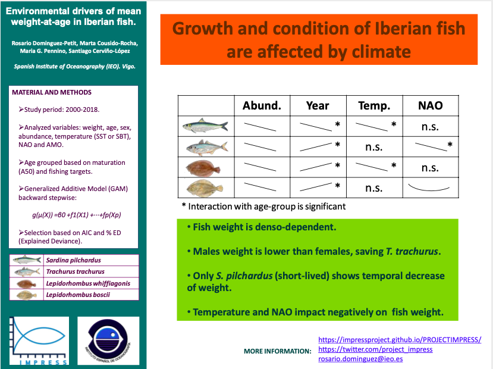
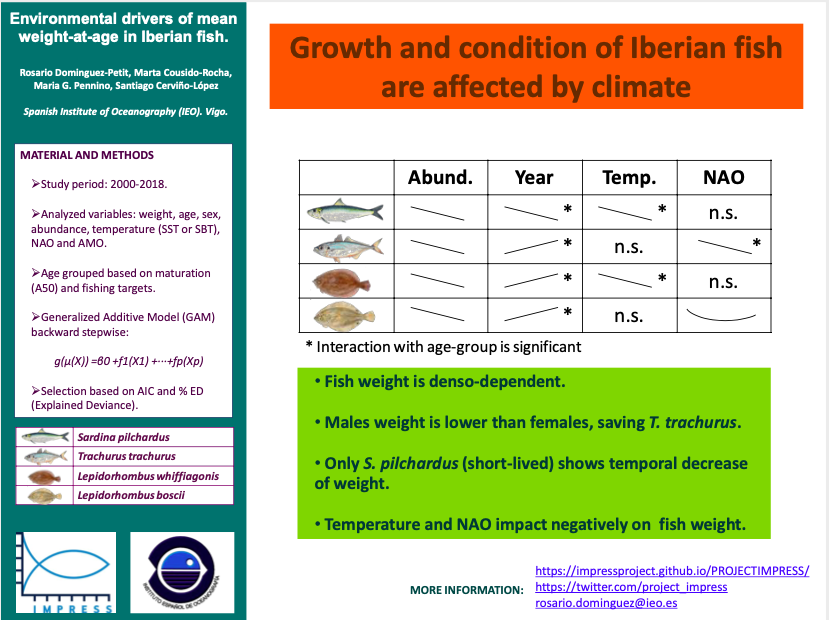- Calls for postdocs (03/12/2020)
If you fulfill the requirements of Ramón y Cajal or Juan de la Cierva and would like to work with us working in Stock Assessment and Spatial Ecology for improving marine resources evaluation and management let we know!!!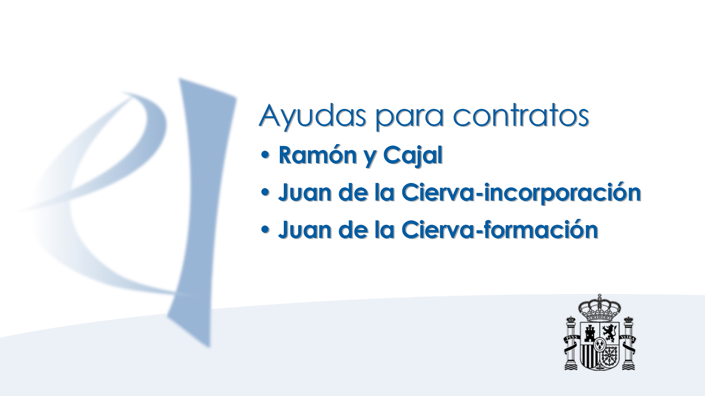- ICES training course on Bayesian Network (9/12/2020)
This week our PhD student Fran Izquierdo is attending the ICES training course on Bayesian Network (BN) analysis and the social-cultural dimension, learning how to apply BN to improve for stocks management.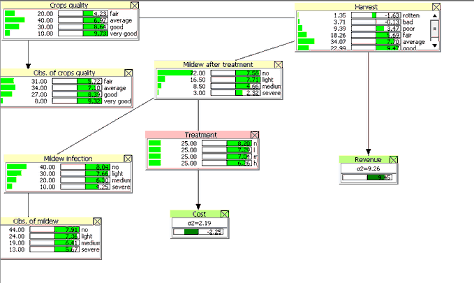- Working Group on Southern Horse Mackerel, Anchovy, and Sardine (27/11/2020)
This week impress members are participating in the WGHANSA (Working Group on Southern Horse Mackerel, Anchovy, and Sardine) which is in charge of assessing the status of and providing short-term predictions for several populations of Small Pelagic Fishes inhabiting the southwestern European waters.
- Workshop on Fish of Conservation and Bycatch Relevance (18/11/2020)
This week our member J. Valeiras Mota is attending to ICES WGs WKCOFIBYC on Fish of Conservation and Bycatch Relevance. Working hard on a list of Bycatch and species of conservation concern (threatened, sensitive, etc) that should be included in future assessments.

- Mixed Fisheries advice in the Iberian waters (30/10/2020)
This has been an intense week for some members working on the Mixed Fisheries advice in the Iberian waters and attending several ICES WGs (WGMIXFISH and WKSPICT) trying to improve the scientific advice of the Iberian Atlantic resources.

- Essential parameters for the Stocks Assessment: the length and the weight (15/10/2020)
This week we talk about two other essential parameters for the Stocks Assessment: the length and the weight. The L-W relationship has 2 fundamental objectives:
- 1. To predict the weight (unknown) from the length (known) of a fish. Very useful for calculating the biomass of a sample from the length frequency of that sample.
- 2. To identify the relative condition of the population by comparing the L-W parameters estimated for a population “x” with:
- (a) average parameters of the region
- (b) estimated parameters from previous years
- (c) other groups of fish.
- b = 3 isometric (W and L increase proportionally)
- b < 3 allometric negative (larger fish are larger than small ones)
- b > 3 positive allometric (greater proportional gain in W than in L)

- VII Conference of Users of R in Galicia (15/10/2020)
Marta Cousido-Rocha presents the conference "A new R-package for the analysis of the fisheries population under uncertainty" in the VII Conference of Users of R in Galicia. Watch the conference in her youtube channel. Go to the video.

- ICES WKLIFE (09/10/2020)
Until recently, fisheries science was unable to inform decision-makers on the status and potential of data-limited fish stocks because we lacked suitable assessment methods. Since 2010, ICES WKLIFE has turned this picture around. Website.
Santiago Cerviño and M. Grazia Pennino have been participated in ICES WKLIFE.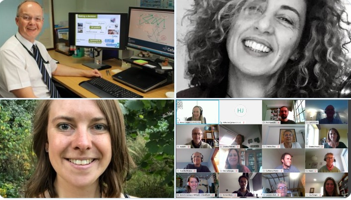- Scientific advices of the Iberian Atlantic resources (09/10/2020)
Impress project members presented the scientific advices of the Iberian Atlantic resources to the Spanish General Secretariat for Fisheries!Keep working to improving Stocks Assessment and Communication between managers and stakeholders.

- ICES WKLIFE X (07/10/2020)
Our colleague Maria Soto is presenting during the ICES WKLIFE X the preliminary results of a work that assess the effects of under-estimating discards in Production Models using as case study the assessment of the hake in NW Africa.
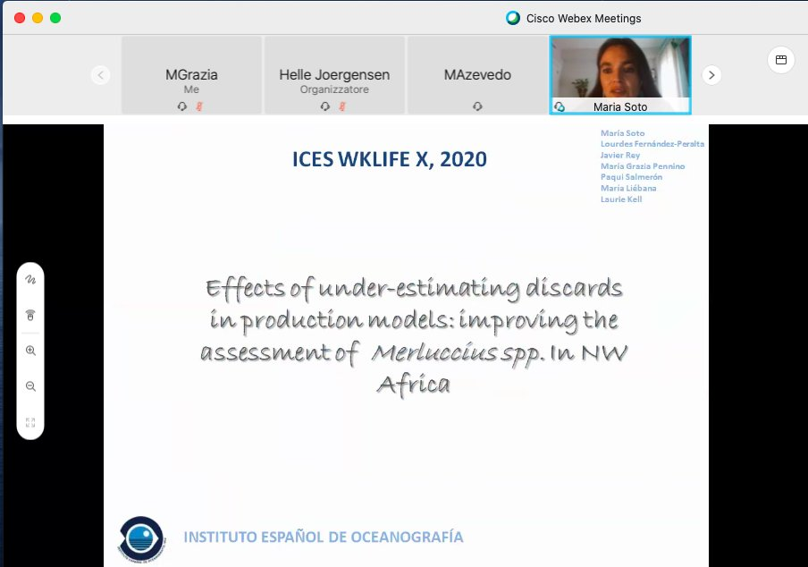- Welcome to Francisco Izquierdo and Amina Tifoura (06/10/2020)
We are very glad to announce that 2 PhD students are joining the Project Impress group! Amina Tifoura and Fran Izquierdo are going to develop their PhD exploring difference aspects of the Stock Assessment process.
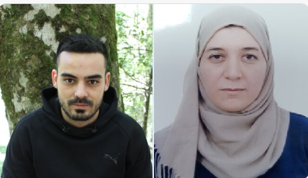- SPiCT model applications meeting with Tobias Mildenberger and Alexandros Kokkalis (30/09/2020)
Great meeting showing advances in SPiCT model applications for Iberian resources in Atlantic waters. Many thanks to advisors Tobias Mildenberger and Alexandros Kokkalis to join us and for all comments and suggestions.
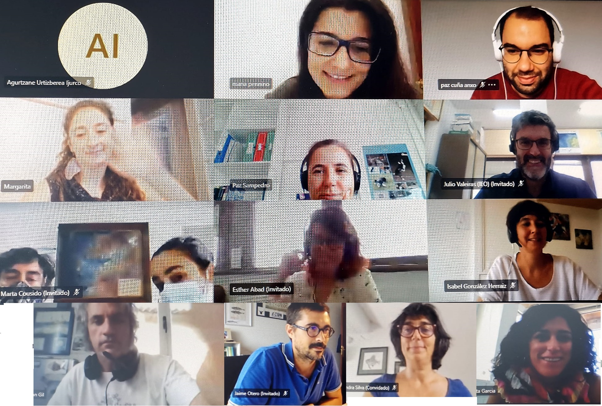- SPICT applications (22/09/2020)
Impress Project members are reviewing advances on SPICT applications on different stocks in the Atlantic waters.
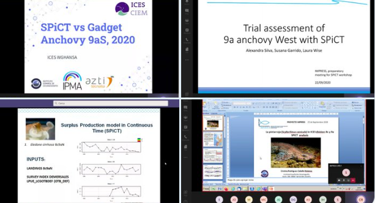- Workshop on Data-limited Stocks of Short Lived Species (18/09/2020)
Some of our members are participating in the Workshop on Data-limited Stocks of Short Lived Species to further develop methods for Stock Assessment and catch advice for short-lived stocks, focusing on the provision of advice rules.
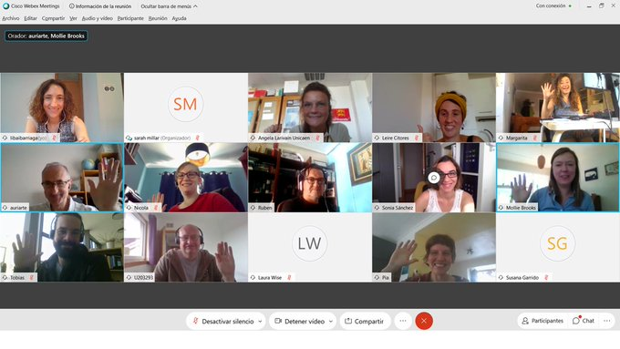- New study to help Fisheries Assessment and Management (18/09/2020)
A fundamental concept for Fisheries Assessment and Management is the existence of Stock Units. We are working in a new study in Impress Project ....stay tuned!

- WKTADSA (17/09/2020)
Some of the Impress Project members are preparing during these days the Workshop on Tools and Development of Stock Assessment Models. Using a4a and stock synthesis (WKTADSA)! Always trying to improving stock Assessment Models.

- Welcome to Davinia Loja Amoedo and Anxo Paz (16/09/2020)
A big welcome to Davinia Loja Amoedo and Anxo Paz who will start their Master's thesis with our team working on different working packages of Impress Project. Anxo will work with different Production Models while Davinia will study the relationship of some life-traits with the environment.
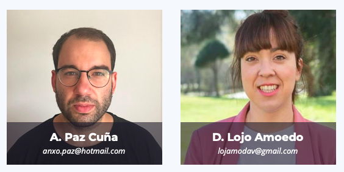- DESCARSEL survey (28/08/2020)
One of the main source of data used in stock Assessment Models is derived from oceanographic surveys! Members of Impress project are participating in DESCARSEL survey which studies selectivity in the Northwest Cantabrian fresh fishery.

- Reminder: Follow us on Twitter and Github (26/08/2020)
Advances on research and important news can be accessed as well following us on Twitter and Github (below links in the logo image).


- IMBeR Interdisciplinary Marine Early Career Network (17/08/2020)
Some members of Impress Project are attending to the the IMBeR Interdisciplinary Marine Early Career Network that aim on balancing the social, cultural, economic and ecological objectives!Learning on spatial measures to improve the assessment of marine resources.

- Conference about collaboration between fishermen and researchers (24/07/2020)
Julio Valeiras and Eva Velasco present the importance of collaboration between fishermen and researchers.
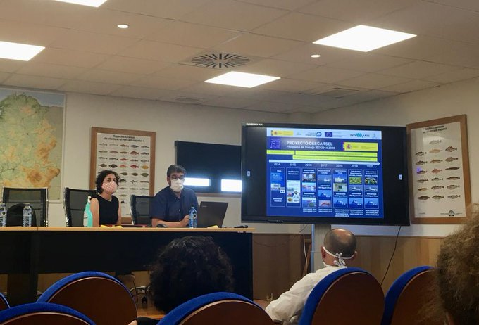- Virtual International Statistical Ecology Conference (25/06/2020)
Maria Grazia Pennino and Marta Cousido Rocha have contributed to ISEC 2020. Please check the details of the contributions in this link.
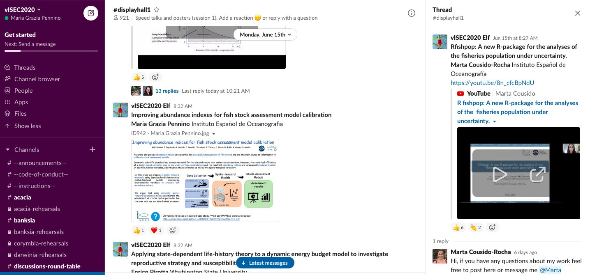- (Virtual) Second Project Meeting Impress (18/06/2020)
Explaining advances of the aims proposed in the first meeting and establishing future studies/activities.

- The Second Workshop on Populating the RDBES data model (WKRDB-POP2) (03/06/2020)
The RDBES will be extensively used by ICES member states, the EU Regional Coordination Groups, and ICES expert groups to store detailed commercial fisheries sample data and use it for estimation - therefore it is essential that national data submitters are familiar with the RDBES format and confident in correctly converting their national data to this format.The activities of this workshop will promote the development of a Regional Database and Estimation System, RDBES at ICES. This workshop will help countries to correctly convert their national data formats to the RDBES format. The RDBES when it is implemented works as a commercial fisheries database for the Baltic Sea, North Sea & Eastern Arctic, North Atlantic and Long Distance Fisheries Regional Coordination Groups (RCGs). The RDBES will also function as a database and estimation system for ICES Fisheries Advice. The development will concentrate on harmonisation, quality assuring, documentation, approved estimation methods and transparency. Consequently, these activities are considered to have a high priority. ICES will issue a data call in 2020 for 2019 samples, landings and effort data in the new RDBES format from selected stocks. The ideal conclusion is that at the end of this workshop each person attending has developed working scripts to extract the data that will be requested by the RDBES data call.
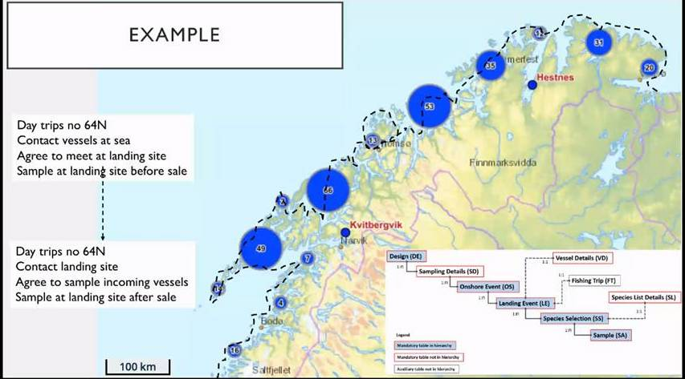- IEO starts a new project "DIVERSIMAR", an initiative of citizen science to study marine biodiversity (01/06/2020)
- Working Group for the Bay of Biscay and the Iberian Waters Ecoregion (WGBIE) (13/05/2020)
We finished the WGBIE . Challenge and intense days with online meetings!
- Working Group on the Biology and Assessment of Deep Sea Fisheries Resources (WGDEEP) (06/05/2020)
Closing WGDEEP after productive days working on Stock Assessment Models.
- Working Group for the Bay of Biscay and the Iberian Waters Ecoregion (WGBIE) (05/05/2020)
Many of the members of Impress project will attend the ICES WGBIE evaluating megrim, anglerfish, sole, nephrops and pollack stocks in the Atlantic waters.
- Working Group on the Biology and Assessment of Deep Sea Fisheries Resources (WGDEEP) (28/04/2020)
Lockdown but still working on Stock Assessment Models as usual!Our team member Juan Gil Herrera is attending the WGDEEP presenting the evaluation of the Spanish Blackspot seabream in the ICES area 27.9
- Course of Galicia Supercomputing Center (CESGA) (17/04/2020)
We are learning how to use Galicia Supercomputing Center (CESGA) in order to explore some options of our R package Rfishpop. Rfishpop is a interest project whose details can be found in the Github repository of this project.
- Useful tutorials availables in Impress Github account (26/03/2020)
The tutorials deal basic aspects of developing R packages in R studio and basic ideas of using Github. Visit Impress Github account.
- Eva Velasco explained selectivity and discards to the fishery sector (06/03/2020)
Eva Velasco explained selectivity and discards to the fishery sector. Stakeholder engagement is essential for sustainable fisheries.

- International Day of Women and Girls in Science (11/02/2020)
The United Nations General Assembly declared 11 February as the International Day of Women and Girls in Science in order to achieve full and equal access to and participation in science for women and girls, and further achieve gender equality and the empowerment of women and girls. To celebrate this day, Eva Velasco gave talks to secondary school students, about marine resources and innovative tools for sustainable fisheries, explaining Descarsel and Sicaptor projects.

- Introduction to regression models with spatial correlation using R-INLA (10/02/2020)
We are attending to the course "Introduction to regression models with spatial correlation using R-INLA" given by Alain Zuur and Elena Ieno.

- Second day of dissemination of Fisheries Research in ArviInnovapesca (12/12/2019)
We are participating to the second day of dissemination of Fisheries Research in Arvi Innovapesca. The dialogue between stakeholders and researchers as a model of Sustainable Fisheries Management.

- Fisheries and Aquaculture Meeting (10/12/2019)
This week we are in Rome at Fisheries and Aquaculture participating to the benchmark session on the assessment of blackspot seabream in the Strait of Gilbratar!

- WGHANSA meeting (28/11/2019)
Very hard work of Impress Project Members at the WGHANSA meeting.

- Seminar "The recent hake fishery in Mexico. Management Bases" (12/11/2019)
We want to say goodbye to Oscar Zamora García that has been collaborating with us for the last two months and learning techniques of data-limited stock assessment and spatial models!It was a pleasure have you in the IEO Vigo!Have a save flight back to home.

- Landing Obligation Meeting (18/11/2019)
From the Impress Project we are involved in different aspects to improve species stock assessment. Our colleague Julio Valeiras participated in a meeting to explain the Landing Obligation and the importance to reduce discards.

- Sustainable Fisheries Symposium Fisheries Aquaculture (19/11/2019)
Our Impress Project member Carmen Fernandez at the Sustainable Fisheries Symposium Fisheries Aquaculture.

- CPUE standardisation workshop (21/10/2019)
We are attending a CPUE standardisation in the IEO Málaga. Different methods to improve abundance indexes for Stock Assessment models.
- Offer of Scholarship for Training of Doctors of Impress Project (18/10/2019)
Offer of Scholarship for Training of Doctors of Impress Project. "Application of spatial and ecological knowledge in the evaluation of fishing stocks" Link.
- Data limited methods workshop (17/10/2019)
The aim of this workshop is to identify possible stock-assessment models for data-limited stocks. More precisily, we focus on length-based spawning potential ratio method, length based indicators and surplus production in continuous time model "SPiCt".
- PhD contract offer (17/10/2019)
Come and join me and Dr Santiago Cerviño ( IEO Vigo ) on this exciting PhD project ( Impress Project ) where you will examine new spatial stock Assessment models to improve scientific advice. For more information please contact me and see: Link.

- Kick-off meeting of the IMPRESS project!(15/10/2019)
Very productive meeting, reviewing Working Packages and tasks of the project!A lot of work to be done.

- Calls for postdocs (03/12/2020)